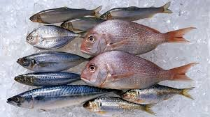
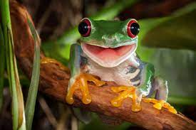

ANIMAL CATEGORIES
-  Fish (in general)
is a cold-blooded aquatic organism that breathes with gills and swims with fins; they are categorized as Finfish and Shellfish. Finfish are col
d-blooded aquatic vertebrates that have gills, fins with rays, and scales covering the body.
- 
Amphibians are small vertebrates that need water, or a moist environment, to survive.
-
.jpg) All living reptile species are cold
blooded, have scaly skin, and lay cleidoic eggs. They excrete uric acid (instead of urea), and have a cloaca.
All living reptile species are cold
blooded, have scaly skin, and lay cleidoic eggs. They excrete uric acid (instead of urea), and have a cloaca.
-
.jpg) Mammals are a g
roup of vertebrate animals. Examples of mammals include rats, cats, dogs, deer, monkeys, apes, bats, whales,
dolphins, and humans.
Mammals are a g
roup of vertebrate animals. Examples of mammals include rats, cats, dogs, deer, monkeys, apes, bats, whales,
dolphins, and humans.
-
.jpg) bird, (class Aves), any of the more than 10,400 living species unique in having feathers, the major characteristic that distinguishes them from all
other animals.
bird, (class Aves), any of the more than 10,400 living species unique in having feathers, the major characteristic that distinguishes them from all
other animals.